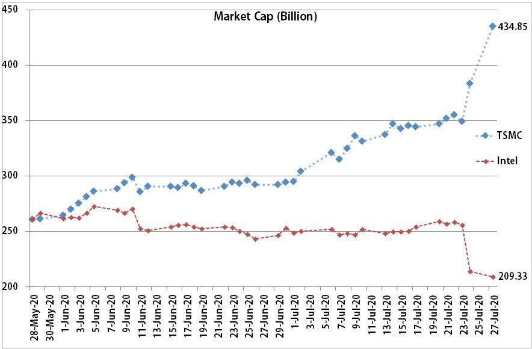

NVDIA 拿下 ARM 對 Intel 影響
原討論串開頭：https://t.me/GooayeUSA/141933
SamLin YSL, [15.09.20 21:58]
NVIDIA 拿下 Arm ，蘋果與高通或許有點介意，但受傷的可能是英特爾
繼續閱讀: http://technews.tw/?p=646854
-分享自 科技新報 App
John Wang, [15.09.20 22:22]

不是可能受傷
是一定受傷兩個月前我做了一張圖
TSMC跟Intel的市值比較圖
今年五月以前兩家市值差不多
但是7月底台積電連續兩天跳空
同時間Intel大跌
可從圖看到台積電市值已經大幅超越
且是Intel的兩倍左右市場已經告訴我們答案
誰是半導體界的新霸主
過去Intel稱霸幾十年
接下來要換人了
而且不是短期現象
我是看很長期樂觀看待好幾年前台積電在28奈米大舉投資跟擴廠
就此甩開競爭對手並拉近第一名的距離
到現在台積電再度大舉投資跟擴廠
已經預告未來在我眼中Intel是家好公司
有非常好的設計跟研發能力
但是我一股都不想持有
買了一堆TSM大聯盟真心希望Intel製程良率不要卡關太久
如果我是Intel CEO
我會把製造部門關掉
轉型為IC design house